You can do a lot of powerful editing with RMS Coach®! Every type of edit you would make to a score during a rehearsal process can be made in the program: key changes, cuts, vamps, re-ordering songs… it's all possible.
To keep things clear and safe from accidental edits, RMS Coach ® has two distinct modes: Performance Mode and Edit Mode. They can be accessed via the Mode-P (or Mode-E) item in the menu bar, or by clicking the lock icon on the right side of the Timeline. Locked means you are in Performance Mode and unlocked (and highlighted orange) means you are in Edit Mode.
Pay attention to the modes when you are making changes! There are some types of edits you can make in Performance Mode (such as muting or quickly changing the key of the song), but they won't "stick" and will return to the previously saved state when the program is closed, or in some cases when the current song changes.
The timeline is a graphic representation of the current song. It contains helpful information including measure layout and meter changes. Using the zoom function, the span of the timeline can be adjusted to the user's preference. As the song plays, the timeline scrolls to keep the display current. In addition to representing the structure of the song, the timeline also displays highlighted areas where there are edits.
You may relocate to a new measure within the Timeline by simply double-clicking anywhere on the timeline. RMS Coach ® will immediately jump to that location.
There are 6 different types of edits you can create in the Timeline:
Each type of edit is represented by a different color in the Timeline (and these colors can be personalized via the Preferences menu.
CUT
When inserted into a song, this edit will direct RMS Coach
®
to cut (jump over) a section of the music. The section to be cut is determined by indicating the start and end locations of the cut.
The selector for a cut is found in the upper left of the Timeline while in Edit Mode.
VAMP
When inserted into a song, a vamp directs RMS Coach
®
to repeat a section of the music indefinitely. The section to be vamped is determined by indicating the start and end locations. The user exits the vamp by clicking on the Exit Vamp button on the transport control strip or pushing the corresponding function key (F12 by default). When the Exit Vamp button is clicked, RMS Coach
®
will exit the vamp upon completion of the current repeat.
The selector for a vamp is found in the upper left of the Timeline while in Edit Mode.
REPEAT
When inserted into a song, a repeat will direct RMS Coach
®
to the designated section multiple times (but not indefinitely like a vamp). By default, RMS Coach
®
will establish a 1x repeat, playing the designated section twice through. When considering repeats, remember that the total passes through the music is one more than the repeat number. In other words, if the repeat value is 1, the section repeats once and is thus heard twice. If the repeat value is 3, the section will be heard 4 times total. To modify the repeat settings, see Wait/Times.
The selector for a repeat is found in the upper left of the Timeline while in Edit Mode.
ATTACCA
When inserted into a song, an attacca edit will direct RMS Coach
®
to immediately jump forward to the next song in the Song List and begin playing. The placement of the attacca is determined by indicating the start location, and is represented by a line with an arrow at the bottom.
The selector for an attacca is found in the upper left of the Timeline while in Edit Mode.
RHYTHM
The rhythm edit modifies the "tap value" for playing the music in real-time via the space bar. For example, let's say a section of music is in 4/4 and each press of the spacebar equals one quarter note. But maybe you want a little more control and want each spacebar press to equal an eighth-note. The rhythm edit will let you do that.
The value selector for making a rhythm edit is in the Tempo section. See 'Rhythm Editing' for more details.
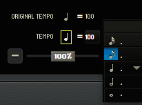
TRANSPOSE
A transposition edit allows you to change the key of a section or even the entire song. You can move up or down by as many as 11 half steps (a major 7th), allowing you to place the song in the range best suited to your performers.
You can select the key you want (in half steps up or down) by clicking on the arrows in the Transpose section while in Edit Mode.
There are two types of Timeline edits: Range (selection) edits and point edits. Range edits apply to only a section of the Timeline, while point edits occur at a specific spot and apply to the end of the current song, or until a similar type of edit is encountered.
To create a range edit, simply click and drag over the part of the Timeline you would like to edit to highlight it, and select your edit. It will then be applied to the range you have selected, and a colored box will appear.
To create a point edit, simply place the playback cursor where you would like the edit to go into effect and select your edit. Cuts, vamps, and repeats are not valid options for a point edit, and an error dialogue will appear if you attempt to create one without a range selected.
To remove an edit, simple click to select it while in Edit Mode, and press the "delete" key.
There are two major concepts to be familiar with when modifying, or fine-tuning a Timeline edit. These are Measure/Beat/Tick and Wait/Times.
If you need an edit to take place at a spot within a specific beat, you will need to use the measure/beat/tick format of designating location within the Timeline.
Measure: A number representing a valid measure in the current song.
Beat: A number representing the beat within the indicated measure.
Tick: A number representing the subdivision of the beat within the measure. RMS Coach
®
divides each beat into 480 ticks. The tick number has the following correspondence:
eight note = 240 (ticks)
sixteenth note = 120 (ticks)
eight note triplet = 160 (ticks)
dotted eight note = 360 (ticks)
In the following example, if you want to cut from the last eighth note in measure 21 to the beginning of measure 25, the following edit region data would be used:
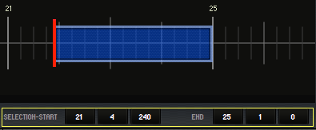
After a Timeline edit is created, it is possible to refine its behavior by adding wait and/or times values. The wait and times fields are visible in the upper right portion of the Timeline when you select an edit.
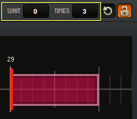
The 'Times' value determines the total number of times an event will execute on successive passes before expiring. The classic use is in conjunction with repeats. A repeat with a times value of 1 will repeat one time (i.e. the playback will relocate 1 time when the repeat event is hit, and consequently the section of music will play twice.) On the second (or third, etc). passes, no relocate takes place because the times count has expired.
The 'Wait' value determines the total number of passes before a given event engages. The classic use is with first ending/second ending situations. In this case, you may have a cut that you want to engage the second time around. For example, you might have a repeated section of music from the downbeat of measure 36 to the downbeat of measure 44. However, the second time through, you want to cut measures 42 and 43.
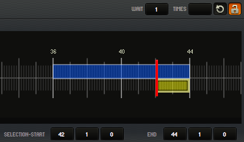
To do this, you would need two edits:
a repeat of measures 36 through 43 (with a times value of 1)
a cut of measures 42 and 43 with a wait value of 1
The cut would not be performed the first time through. Instead, the cut would wait one pass before executing (the second time through). Thus, the music sounds as indicated by the first ending/second ending scenario described above.
An event with times value = 0 will perform every time (e.g. a vamp).
It is possible to apply "wait" and "times" to transposition, rhythm, and attacca edits as well.
The transport buttons allow quick control of playback, and may also be activated with the Function Keys. From left to right, they are:
Rewind to start/move to previous song (if at beginning of current song) - F6
Skip back 1 bar - F7
Go - F8
Stop - F9
Skip forward 1 bar - F10
Jump to next song - F11
Exit vamp - F12
Please note that on some Macintosh computers, F11 and F12 are used by the operating system. To be able to use these buttons, go into System Preferences->Keyboard->Shortcuts and uncheck the boxes next to "Show Desktop - F11" and "Show Dashboard - F12".
You can also re-assign the Function Keys via the Preferences menu.
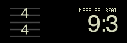
These fields show the current time signature and placement for the playback marker.
You can click on the metronome icon to toggle a click on/off during playback.
If you would like to change
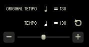
The Tempo section of RMS Coach ® contains information on the tempo at the current playback position, as well as tools for modifying the tempo and changing the default click rhythm. The top line shows the program-defined tempo, and the second line shows the current user-defined tempo. The slider on the bottom allows the user to scale the tempo for the entire song by percentage.
Making manual tempo adjustments works differently whether you are in Performance Mode or Edit Mode.
When in Performance Mode, adjusting the slider to scale the tempo is a temporary change. It will stay in effect as long as you remain within the same song, but if you move to a different song (or quit the program), the change will be forgotten, and the song will revert to the saved tempo next time you load it.
If you would like adjustments to stick through song changes or program restarts, first enter Edit Mode through either the menu option or by clicking on the lock icon. Then make your change using the slider, which will now be showing specific percentages. When you are satisfied, exit edit mode and your changes will be saved.
The small note value icon on the second line of the tempo section is where you can change the default tap value for a highlighted section of the Timeline. Simply click on the note icon and a small menu will appear with note durations from 16th-note to whole-note, along with dotted variations. Select which one you want, and the highlighted section of the Timeline will change color, indicating that you have made the change.
Similar to making tempo adjustments, making transposition adjustments functions differently whether you are in Performance Mode or Edit Mode.
When in Performance Mode, using the transpose arrows to move the key up or down applies to the entire current song. However, the change will not "stick" once you move to a different song.
When in Edit Mode, the arrow buttons will provide you with a menu that you can use to select how many steps up or down you would like to transpose by. Note that this edit does not apply to an entire song by default. If nothing is highlighted in the Timeline, the edit will apply from the playback marker to either the next transposition edit, or the end of the song, whichever comes first. If a section of the Timeline is highlighted, the transposition will apply to only that section.
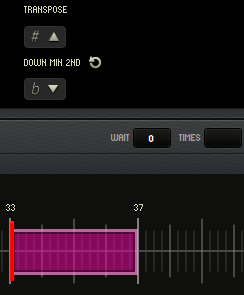
So to make an edit to transpose an entire song up or down, first enter Edit Mode, make sure the playback marker is at the beginning of the song (or alternately, highlight the entire song), and make your change.
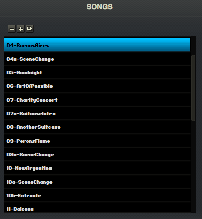
RMS Coach
®
organizes all of the individual songs in the scrollable Song List. Clicking on a song highlights it and makes it the current song. You can also navigate the Song List using the Page-Up and Page-Down buttons on the QWERTY keyboard.
Page-Up = Previous Song
Page-Down = Next Song
While in Edit Mode, you are given some more options within the Songs Pane. There will now be buttons for "remove", "add" and "duplicate". You can also rename a song by double-clicking on it, or move it in the list by dragging the song name.
Note that when you remove a song, it is not gone forever! The "add" button will give you a list of the original songs to choose from, including any songs you have cut.
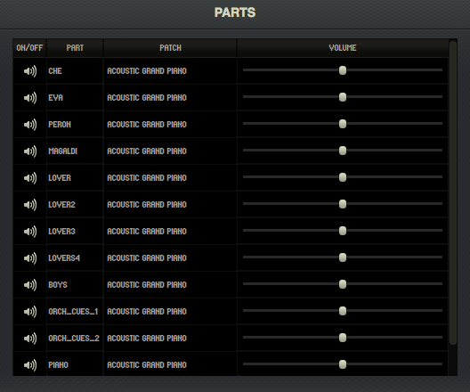
Each song is broken down into separate voices and instruments which are displayed in the Parts window. The individual parts represent important musical components such as the main accompaniment, any drum tracks, individual vocal lines, orchestral cues, etc. When played together, these individual parts represent the complete song. By clicking on the speaker icons, the parts may be individually muted or unmuted in order to isolate lines or control the overall texture. This capability and flexibility is invaluable when rehearsing and learning music by allowing you to focus on whichever melody is being taught at that moment, or to mute all the vocal lines to have RMS Coach ® act as an accompanist.
Each part can be individually mixed using the volume slider. Furthermore, each part can be given a unique sound to help isolate it in the full texture. This is achieved by clicking on the patch name to the right of the part name to reveal a drop-down menu with over 100 instruments to choose from. For example, you might find it beneficial to put a lead vocal line on an instrument like a clarinet and raise the volume by 5% to help it cut through the texture of the full accompaniment.
As you might guess, changes made to Parts while in Performance Mode won't stick through session changes. If you want your adjustments to be more permanent, make them while in Edit Mode and RMS Coach ® will remember your edits.
You can also re-order the Parts list while in Edit Mode to your liking. This also effects how the song exports to RMS Mix®. For more information, see below.
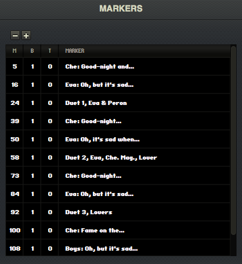
Markers are used for quick relocation and navigation within a song. Most songs will come with markers already in place for important moments. You may edit existing markers by renaming them, changing their location or deleting them altogether. You can also create brand new markers. To go to a marker location, simply click on the marker. When a marker is selected, RMS Coach ® displays an updated timeline to reflect your new location.
Marker locations are identified by the familiar measure/beat/tick format (see measure/beat/tick under "Timeline"). Each marker also has a text field that allows the user to further identify the location with an appropriate name or label. Markers are very helpful for organizing rehearsals and practice sessions.
Changes to markers can only be made within Edit Mode. To add a marker, click on the + button and a generically-named marker will appear at the playback cursor. You may change the position or name of the marker by double-clicking on any of the text fields.
To delete a marker, highlight it and click on the – button.
Every installation of RMS Coach ® comes bundled with a trial version of RMS Mix®, which is a separate resource that provides sophisticated audio playback from your smartphone or desktop computer. RMS Mix ® gives you a very easy way to take your show with you (or give members of your production accompaniment tracks for rehearsal or home practice).
One of the main features of RMS Mix ® is the ability for you to export your current RMS Coach ® show (with key changes, cuts, volume adjustments, transpositions, and any other edits you might have made) for playback within RMS Mix®! To do so, there are couple steps to follow.
RMS Mix ® has 8 total channels of audio. When exporting a song from RMS Coach®, the first 7 tracks (as seen within the "Parts" window for any given song) will each be given their own track within RMS Mix®. Any additional tracks will be grouped together on track 8.
If you require certain parts to have their own track that would otherwise be grouped together, you can re-order the individual voices within the "Parts" window while you are in Edit Mode. Do this by holding and dragging with your mouse.
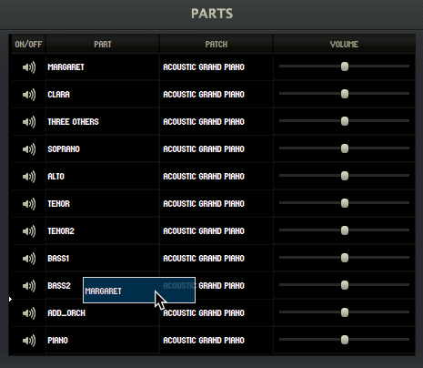
RMS Coach ® shows all come with pre-programmed markers that will also show up in RMS Mix®. However, by editing the markers within RMS Coach ® , you can customize the list of markers in Mix®.
Once you have your Mix Groupings set, you are ready to begin the exporting process.
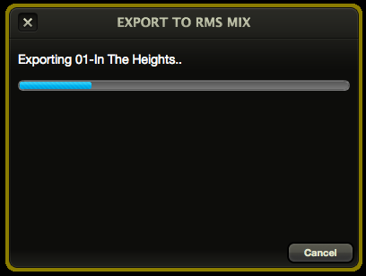
Please note that you have a limited number of RMS Cloud Service exports. With the trial version of Mix ® included with Sinfonia®, you have a single export available to test out the program.
For more information, please visit the RMS Mix ® website .